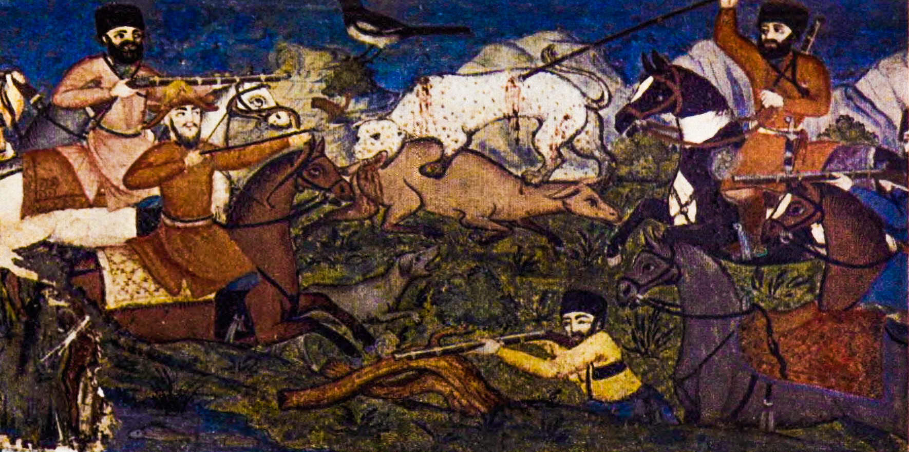
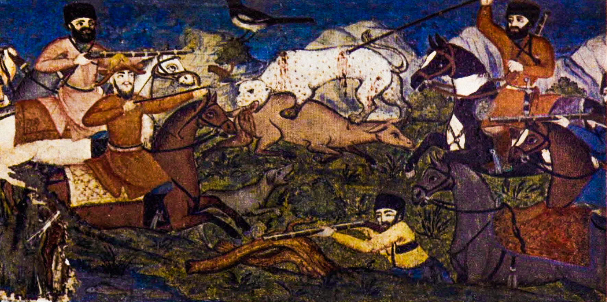

Shaki Khan Palace


 

.jpg)


Sheki khan's palace is a former khan's palace located in Sheki, Azerbaijan. It currently operates as a museum. The palace, located in the territory of the Upper Main State Historical-Architectural Reserve, is a world-famous historical and architectural monument. The palace, built in the Persian style in the 18th century, is located in the north-eastern part of the city, in an area surrounded by castle walls. The 30-meter-long two-storey palace has an area of 300 m2, 6 rooms, 4 corridors and two mirrored balconies. The facade of the palace is decorated with thematic images depicting hunting and battle scenes, as well as geometric and floral patterns. In the very center of the facade there is a large lattice-window made of different colored glass. The bars and windows of the palace made of colored glass are mounted on stone frames. The palace building, which has the characteristics of folk residential buildings, is considered one of the most beautiful examples of palace architecture in the Caucasus, as well as one of the architectural gems of the Islamic East. Along with the historical center of the city, the palace is a World Heritage Site.
History
The "Description of Sheki Province" (Tbilisi, 1866), prepared by Major-General Fyodor Akhverdov and State Councilor Mogilevsky on the instructions of the Caucasus Commander Alexei Yermolov, described the entire palace complex. According to this report, it is possible to determine the initial purpose of many buildings included in the complex. General NNRayevsky, who visited the land in 1826, wrote: "The Bakhchisaray palace gives only a weak idea about the palace of the former khans of that land." In early August 1834, the Decembrist A. Kornilovich wrote a letter to his brother from Guba. In his letter, Kornilovich described the palace as the ruler of Sheki province until 1828: "In Nukha, I saw their palace in the castle in the main city, which is now their place of work. Several steps and a tall portico lead to a large rectangular courtyard with a garden: sixteen Italian poplar gardens lined with unusual symmetry divide it into four alleys. At the edges of the garden are outbuildings inhabited by courtiers, the khan's wives, their servants, and other servants; Behind them is a terrace the height of one and a half people, on the same terrace there are three fountain pools surrounded by two large plane trees, and behind the pool there is a palace building. Although the palace has been abandoned, from the inside it amazes those who see it with the preserved splendor of the past. I went down a narrow, dark, stone staircase (the stairs are very bad all over Asia in general) to a reception room with all the shades of color, On the right and left of the room, instead of the wall, there are rooms with windows decorated with the most delicate patterns made of walnut and small colored glass. The rooms, walls and dome are decorated with colorful glass, as I said above: there are paintings on the cornice that connects them: the struggles of khans and their nobles against mountain bandits (Avars, kimiks) and forest animals (bears, boars, etc.). Andrei Fadeyev, who served in the Caucasus since 1846, described the city in his memoirs, as well as the exterior of the palace, its interior, patterns, bas-reliefs, and oriental paintings. He visited the city of Nukha (the official name of the city of Sheki until 1968). Speaking about the city, he also remembers the palace. He notes that marble fountains surrounded by weeping willows, colorful glass, decorative carvings on the stoves, and wood carvings on the doors and windows "are reminiscent of the former splendor of the khan and the palace." The palace is also mentioned in Ilya Berezin's book "Journey to Dagestan and the Caucasus" published in 1850. The description of the palace was published by Divan bey in the 22nd issue of "Qafqaz" newspaper published in 1852. Alexander Dumas, who visited Sheki in late 1858, also gives some information about the palace. "He was born in this palace," "the grandson of the last Nukha khan," and "began to live here after the emigration of the great princes," said Duma. only describes the palace building itself, which has been under Russian rule since 1827: “Like all buildings of this type, the khan's palace was built on the highest point of the city. The palace, which is typical of new architecture, was built in 1792 by Mahammadhasan khan ... The palace is an amazing building. Only a brush can describe this building and its beautiful islams. By the time of the arrival of the great princes who lived here, the interiors of the palace were restored on the basis of old drawings. It is true that not the whole building, but only its lower floors have been restored ... For now, may God protect the amazing palace in Nukha from vandals. "The Caucasus War" written by military historian Vasily Potto in the late 19th century In his book, he describes the occupation of the capital of the Sheki khanate by the Russians, and also mentions the khan's palace. He called the palace "an exemplary abode of oriental sibariti" and wrote that everything was "designed in a strange, original Persian style: a marble pool surrounded by weeping willows, colorful glass in delicate windows, ceilings made of mirrors, doors, cornices, windows and a room." perfect handmade patterns that decorate their ovens. " An article entitled "Nukha" in the ninth edition of the Encyclopaedia Britannica, published in 1890, also mentions the khan's palace. The encyclopedic dictionary of Brockhaus and Efron, published in the late 19th and early 20th centuries, describes the palace: "